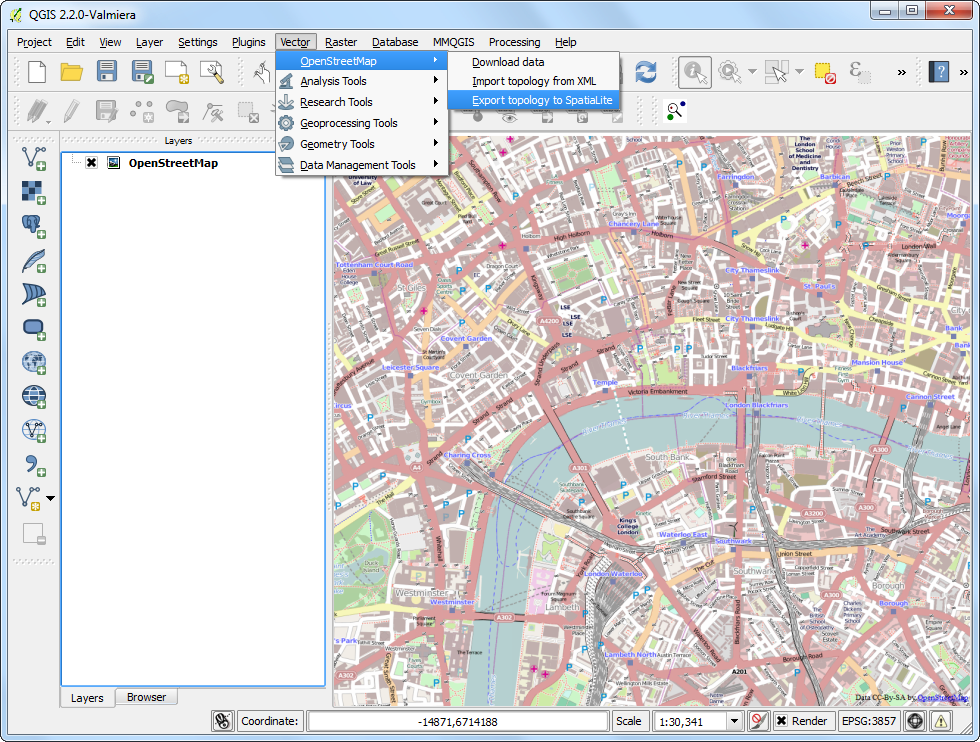

Поиск и загрузка данных OpenStreetMap
[ Download PDF
A4
Letter ]
Получение данных высокого качества имеет важное значение для любой задачи ГИС. Существует отличный ресурс для получения бесплатных данных с открытой лицензией - OpenStreetMap(OSM) . База данных OSM состоит из улиц, местных данных, а также полигонов зданий. Получение доступа к данным OSM в ГИС-формате интегрировано в QGIS. Это руководство показывает процесс поиска, загрузки и использования данных OSM в QGIS.
Обзор задачи
Мы найдем Лондон в базе данных OSM, просмотрим и выделим часть города, затем извлечем все местоположения пабов в shape-файл.
Методика
Мы будем использовать 2 модуля для выполнения задачи. Убедитесь, что вы установили модули OSM Place Search и OpenLayers. См. инструкции по загрузке модулей: Использование модулей расширения.

Модуль OSM Place Search устанавливается в виде панели QGIS. Вы увидите новую панель под названием OSM place search... в окне QGIS.

Модуль OpenLayers устанавливается в меню Модули. Этот модуль позволяет вам получить доступ к базовым картам от различных поставщиков в QGIS. Загрузим базовую карту OpenStreetMap в QGIS, выбрав .

Вы увидите карту мира, загруженную в QGIS.
Примечание
Если вы не видите никаких данных, убедитесь, что вы в сети, так как фрагменты базовой карты загружаются из Интернета. Вы также можете использовать инструмент Прокрутка карты для незначительного перемещения по карте, что приведет к обновлению базовой карты.

Теперь найдем Лондон. Введите запрос в строку Name contains... на панели OSM Place Search. При наведении курсора на результат, соответствующее место будет выделено на карте. Выберите первый результат - город Лондон в Великобритании - и нажмите кнопку Zoom.

Вы увидите, что базовый слой сдвигается и центрируется над Лондоном. Вы можете приблизить его с помощью инструмента Zoom и выбрать конкретную область, которая вас интересует. Для этого урока вы можете приблизить центр города, как показано ниже.

Теперь мы можем загрузить отображенные на карте данные. Перейдите к пункту .

В диалоговом окне Download OpenStreetMap data выберите пункт From map canvas в разделе Extent. Выберите путь и назовите выходной файл london.osm.

Загруженный файл с расширением .osm - это текстовый файл в формате OSM XML. Сперва нам нужно преобразовать его в подходящий формат, что легко можно сделать в QGIS. Выберите пункт .
Примечание
Теперь, поскольку нам больше не нужны функции OSM Place Search, вы можете щелкнуть по кнопке “Закрыть”, чтобы убрать эту панель из главного окна. Если она вам вновь понадобится, вы можете активировать ее из (Windows) или (Linux).

Выберите загруженный файл london.osm в качестве Input XML file. Назовите Output SpatiaLite DB file london.osm.db. Убедитесь, что флажок Create connection (SpatiaLite) after import отмечен.

Теперь последний шаг. Нам нужно создать слои геометрии SpatialLite, которые можно просматривать и анализировать в QGIS. Это делается с помощью .

Файл london.osm.db содержит все типы объектов в базе данных OSM - точки, линии и многоугольники. Слои ГИС обычно содержат только один тип объектов, так что вы должны выбрать один из них. Так как мы заинтересованы в точечных местоположениях пабов, следует выбрать: guilabel:Point (nodes) в качестве Export type. Если бы вам нужна была дорожная сеть, стоило бы выбрать Polylines (open ways). Назовите Output layer name london_points. Данные ГИС имеют 2 составляющие - местоположение и атрибуты. Помимо расположения паба, нас также интересует его имя, так что мы должны также экспортировать эту информацию. Нажмите на пункт Load from DB в разделе Exported tags. При этом будут извлечены все атрибуты из файла london.osm.db. Проверьте тэги name и amenity. См. OSM Tags, чтобы узнать больше о том, что означает каждый атрибут. Убедитесь, что отмечен пункт Load into canvas when finished, и нажмите OK.

Вы увидите, что новый точечный слой под названием london_points загружен в QGIS. Обратите внимание, что в нем содержатся ВСЕ точки базы данных OSM из области просмотра. Поскольку нас интересуют только пабы, мы должны написать запрос, чтобы выбрать только их. Щелкните правой кнопкой мыши на слое london_points слоя и выберите Open Attribute Table.

Вы заметите, что некоторые объекты в колонке amenity имеют значение атрибута pub. Нажмите кнопку Select features using an expression.

Введите выражение “amenity” = ‘pub’ и нажмите Select.

Вернувшись к окну карты QGIS, вы увидите, что некоторые точки выделены желтым цветом. Это результат нашего запроса. Щелкните правой кнопкой мыши на слое london_points и выберите Save Selection As....

В диалоговом окне Save vector layer as... введите имя выходного файла: london_pubs.shp. Оставьте все другие параметры без изменения и убедитесь, что флажок Add saved file to map установлен. Нажмите OK.

Вы увидите новый слой с названием london_pubs в окне QGIS. Снимите отметку со слоя london_points, так как он нам больше не нужен.

Извлечение shape-файла с пабами завершено. Вы можете использовать инструмент Identify, чтобы нажать на любую точку и посмотреть её атрибуты.